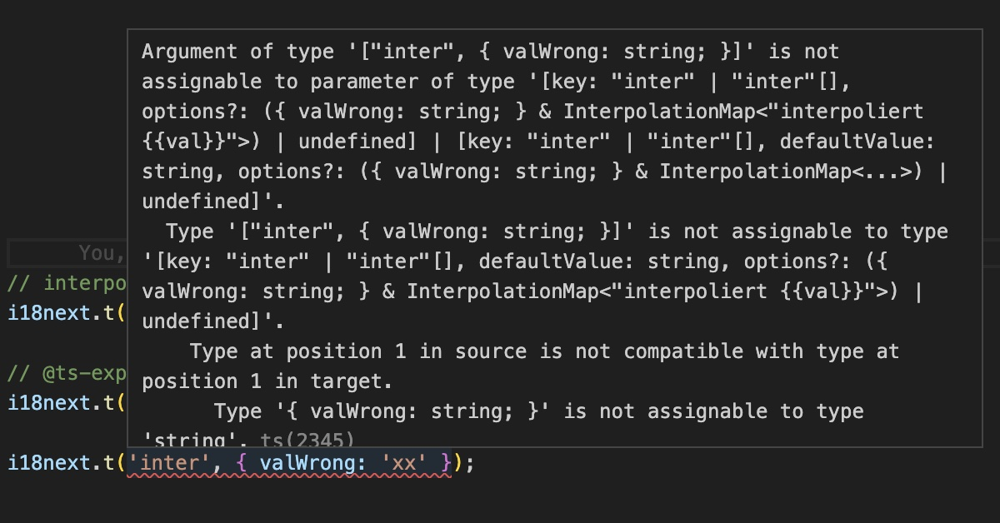

As our world becomes increasingly interconnected, the development of web applications that cater to a global audience takes precedence among developers. If you're a TypeScript developer, you're likely acquainted with the advantages of static typing and the assurance it provides in your codebase. When it comes to internationalization (i18n) and localization (l10n), maintaining the same level of type safety becomes crucial. This is precisely where i18next, an influential i18n framework, enters the picture.
In the past, i18next already furnished TypeScript definitions for its API, enabling developers to benefit from type checking while utilizing the library. However, a significant limitation persisted, specifically the absence of type safety for translation keys. Consequently, if a translation resource was missing or underwent a name change, the TypeScript compiler failed to detect it, resulting in potential errors during runtime.
Nevertheless, with the advent of the new iterations of i18next, that limitation has been overcome (thanks largely to Pedro Durek). Now, i18n keys boast complete type safety. Whenever a developer employs a non-existent or modified i18n key, the TypeScript compiler immediately raises an error, promptly alerting you to the issue before it gives rise to runtime complications. In addition, there is also an improved intellisense experience.
Within this guide, we will delve into the art of leveraging the latest version of i18next to attain translations that are impervious to type-related errors in your TypeScript applications. We will encompass everything from the fundamentals of i18next setup to advanced techniques. All the while, you will benefit from the added safety net of type checking for your translation keys.
By the conclusion of this guide, you will possess a profound comprehension of how to harness the force of i18next's type-safe translations within your TypeScript projects. You will be equipped to ensure that your translations are not only precise and adaptable but also consistently error-free, courtesy of the seamless integration between i18next and TypeScript. Let us embark on this journey together and furnish you with the knowledge and tools necessary to create localized applications that effortlessly cater to diverse language preferences while maintaining the robustness of your codebase.
In-Memory translations
For a simple i18next setup, you probably have something like this:
1 | import i18next from 'i18next'; |
You import the translation resources and you're adding them via i18next init function.
To make the translation type-safe, we create an i18next.d.ts file preferably in a @types folder and we import the translation resources of our reference language:
1 | import enNs1 from '../locales/en/ns1.json'; |

That's already great! But: We Can Do Better! üòú
With the help of i18next-resources-for-ts we can generate a single resource file that we can use.
So install i18next-resources-for-ts and execute the toc command, i.e. something like: i18next-resources-for-ts toc -i ./locales/en -o ./@types/resources.ts
So we can modify the i18next.d.ts file like this:
1 | import resources from './resources'; |
üßë‚Äçüíª A complete code example can be found here.
Plurals
btw: also plural keys works:

Fallback Namespace
And also fallback namespace handling works:
1 | // @types/i18next.d.ts |
1 | // works because of fallbackNS |
Interpolation
Unfortunately, automatic interpolation inference won't work if your translations are placed in JSON files, only in TS files using as const keyword or an interface in a d.ts file, as long as this TypeScript issue is not addressed.

Interface
To address this, let's make use of the interface command, i.e. something like: i18next-resources-for-ts interface -i ./locales/en -o ./@types/resources.d.ts
This way we can change the i18next.d.ts file like this:
1 | import Resources from './resources'; |
Now the interpolation inference works and fails if the passed variable name does not match:

üßë‚Äçüíª A complete code example can be found here.
React.js
A React.js based i18next setup with in-memory translation resources could also look very similar to the above example, so let's raise the bar a little bit and see what a setup with lazy loading translations like with i18next-http-backend looks like:
1 | import i18next from 'i18next'; |
To make the translation type-safe, we again create an i18next.d.ts file preferably in a @types folder like this:
1 | import Resources from './resources'; |
And again we make use of the interface command, i.e. something like: i18next-resources-for-ts interface -i ./public/locales/en -o ./src/@types/resources.d.ts
This way, the translations are loaded at runtime, but the translations are type-checked during development.
With the new react-i18next version, when loading multiple namespaces, t function will infer and accept the keys for the first namespace. So this pattern is now accepted:
1 | import { useTranslation } from 'react-i18next'; |
Trans component
And also the Trans component is type-safe:
1 | import { useTranslation, Trans } from 'react-i18next'; |

üßë‚Äçüíª A complete code example can be found here.
No app-bundled/provided translations
There is also a way to keep the translations completely separate from your code repository while maintaining type safety.
Let's take the React.js project used in this awesome guide...
The final i18next setup in this example looks like this:
1 | import i18n from 'i18next'; |
So at runtime we load the translation directly from the locize CDN.
So how do we get type-safe translations during development?
We create some npm scripts to help us:
- Download the published translations (in reference language) to a temporary directory, i.e.:
downloadEn: locize download --project-id=0bbc223a-9aba-4a90-ab93-ab9d7bf7f780 --language=en --ver=latest --clean=true --path=./src/@types/locales
- Create the appropriate interface definition file, i.e.:
interface:
i18next-resources-for-ts interface -i ./src/@types/locales -o ./src/@types/resources.d.ts
- Final script: download, create interface and delete the temporary files, i.e.:
update-interface: npm run downloadEn && npm run interface && rm -rf ./src/@types/locales
Like in the previous example, we now can just import that interface in our i18next.d.ts file:
1 | import Resources from './resources'; |
That's it!
The translations are separated from our code repository and at the same time we maintain type safety with the help of an interface.
üßë‚Äçüíª A complete code example can be found here.
There's also a video about this topic.
üéâü•≥ Congratulations üéäüéÅ
In conclusion, mastering i18next for type-safe translations empowers TypeScript developers to unlock the full potential of their applications. By ensuring accurate localization, eliminating runtime errors, and leveraging the seamless integration between i18next and TypeScript, developers can create robust, localized applications that cater to diverse language preferences. With the knowledge and tools provided in this guide, you are equipped to supercharge your TypeScript app and deliver exceptional user experiences on a global scale.
Happy coding!
So if you want to take your i18n topic to the next level, it's worth trying the localization management platform - locize.
The founders of locize are also the creators of i18next. So by using locize you directly support the future of i18next.